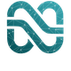
COO & Co-Founder, Nexa Solutions · Odoo Project Manager
I started my career in accounting, so I build Odoo around how your numbers, stock and people actually work: 79+ ERP projects across Egypt, Saudi Arabia and the GCC. Today I am COO of Nexa Solutions, an Odoo Official Partner.
Odoo Official Partner (Nexa Solutions) Odoo 16 · 17 · 18 Certified Google Project Management IBM IT Project Manager LinkedIn Top ERP Voice
From startups to enterprise groups — across Egypt, Saudi Arabia & the GCC.
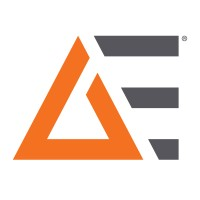
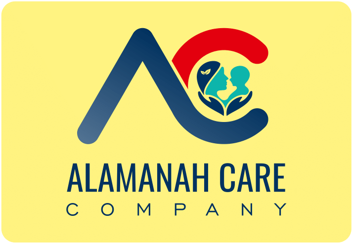
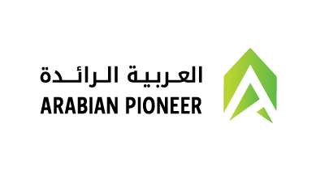
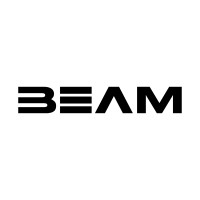
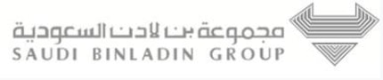
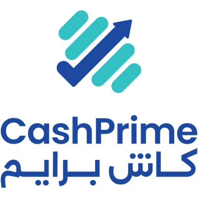
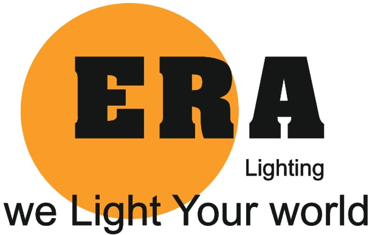
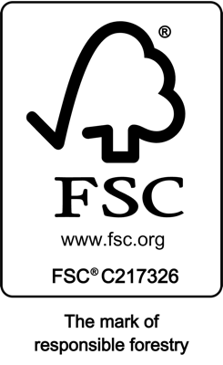
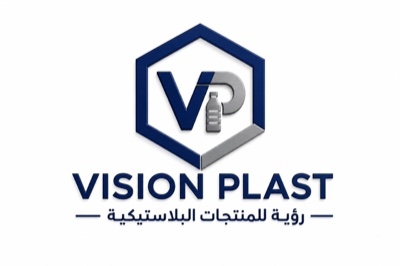
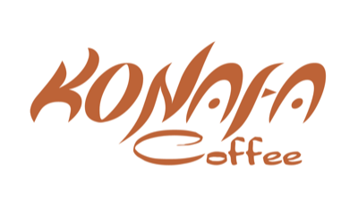
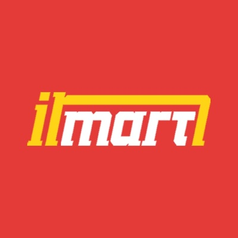
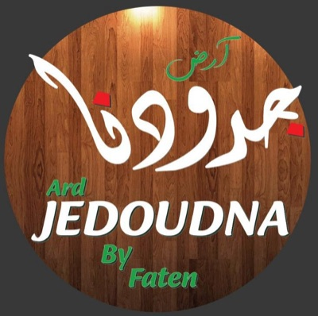
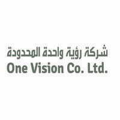
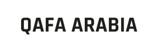
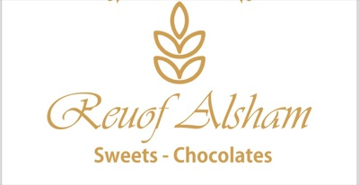
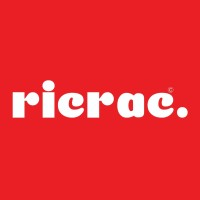
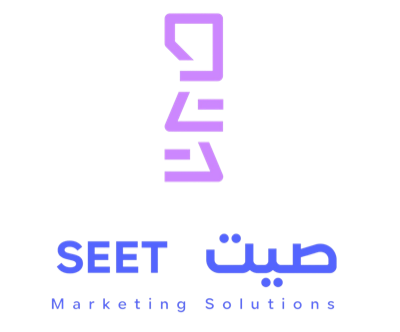
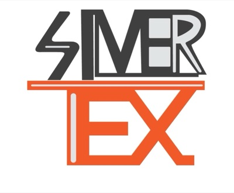
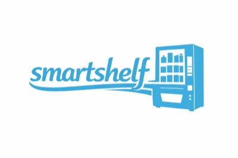
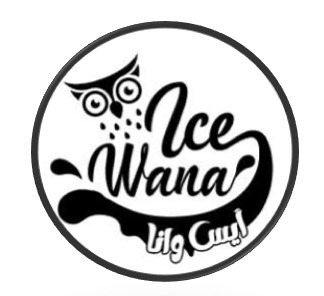
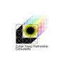
I started as an accountant, closing the books and preparing financial statements for a manufacturer. Since 2019 I have implemented ERP systems, and in 2024 I co-founded Nexa Solutions, an Odoo Official Partner, where I am COO. Why it matters to you: I design Odoo from the general ledger outward, so finance, inventory, manufacturing and HR agree from day one. 79+ projects across Egypt, Saudi Arabia, UAE and the GCC, in Arabic and English.
Odoo Project Manager with 12+ years of experience: a start in finance and accounting, then 7+ years in end-to-end ERP deployment, configuration, and optimization. Co-Founded Nexa Solutions as COO, building it into a recognized Odoo Official Partner with a growing presence across Egypt, Saudi Arabia, and the GCC region.
Proven ability to translate complex business and financial objectives into scalable Odoo solutions. Successfully led 79+ ERP engagements across Construction, Manufacturing, Food & Beverage, Retail, Government, and Real Estate sectors — with deep expertise in business requirements gathering, GAP analysis, process reengineering, data migration, multi-company/multi-currency configuration, and post-go-live support.
Fluent in Arabic and English. Based in Egypt — actively serving clients across Egypt, Saudi Arabia, UAE and the wider GCC market.
What sets my approach apart — beyond the certifications and the project count.
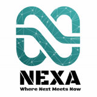
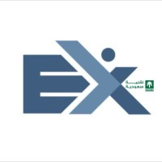
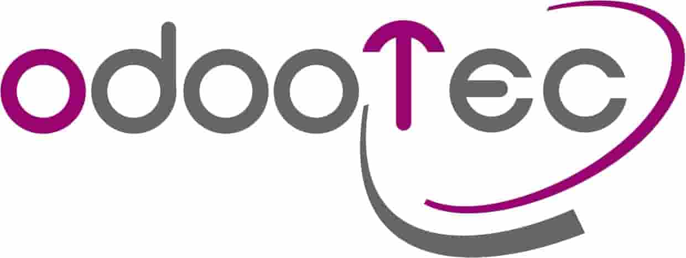
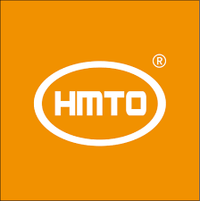
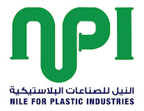
"At NEXA, we transform potential into performance. With deep expertise and proven success, we deliver ERP solutions that drive businesses forward — Your future starts with NEXA."
A forward-thinking software company specializing in Odoo ERP. Founded by seasoned professionals with deep expertise across MENA industries.
Mar 2024 – Present
Recognized for thought leadership and ERP insights shared with thousands of followers. In-depth posts on ERP challenges, innovations, and deployment best practices across the MENA region.
Active contributor to the Odoo Community through knowledge sharing, answering questions, and promoting ERP best practices. Actively progressing toward the Hero rank.
Planning a rollout, rescuing one that stalled, or moving from another ERP? Book a free 30-minute call and leave with a clear next step, whether or not we work together.
Also open to full-time ERP leadership roles across Egypt, Saudi Arabia and the GCC.
Fill the form below and I'll respond within 24 hours
Based on Odoo's official ROI Analysis methodology — the same tool used with real clients. Select your departments and business profile to get an accurate projection.
* Methodology from Odoo's official ROI Analysis Template. Efficiency rates benchmarked across 79+ real implementations by Nexa Solutions. Results vary by scope and complexity.
A comprehensive, data-backed Return on Investment analysis for Odoo ERP — based on 79+ real implementations across Egypt & GCC. Use the calculator above to personalise this report, then email it directly to your customer.
Prepared by Nexa Solutions · Mohamed Essam Abu Emira, COO & Odoo Project Manager
Odoo ERP delivers measurable, compounding ROI by consolidating fragmented systems into a single integrated platform. Across 79+ implementations managed by Nexa Solutions, clients in manufacturing, trading, retail, construction, and services have achieved 15%–60% efficiency gains per department within the first year. The average payback period is 12–18 months, with a 3-year ROI ranging from 180% to 420% depending on company size, number of users, and modules deployed. Odoo's open-source foundation eliminates per-module licensing fees, drastically reducing total cost of ownership versus legacy ERP platforms.
📈 Your Estimated ROI Snapshot
↑ Use the ROI Calculator above and these figures will update automatically.
💡 Key Quantifiable Benefits
📅 5-Year Financial Projection (Industry Benchmark)
⚠️ Key Success Factors & Considerations
Odoo ERP represents one of the highest-ROI technology investments available to mid-market businesses today. With implementation costs 60–80% lower than SAP or Oracle, and a unified platform replacing dozens of point solutions, the financial case is compelling across every industry vertical. The Nexa Solutions team has delivered 79+ successful implementations with an 80% project conversion rate from ROI Analysis to signed project. We recommend scheduling a complimentary 30-minute ROI assessment to model the specific numbers for your business.